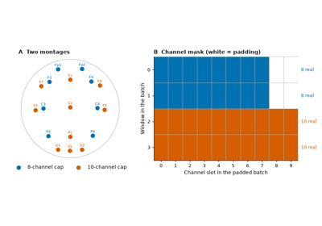
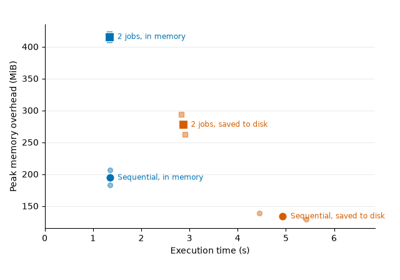
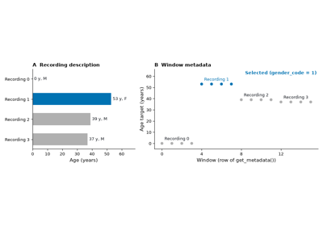
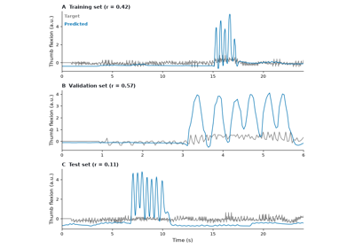
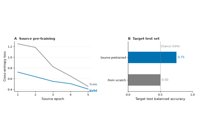
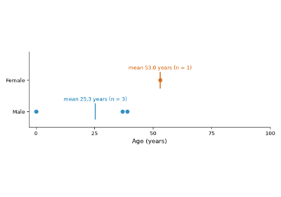

braindecode.preprocessing.create_fixed_length_windows#
- braindecode.preprocessing.create_fixed_length_windows(concat_ds, start_offset_samples=0, stop_offset_samples=None, window_size_samples=None, window_stride_samples=None, drop_last_window=None, mapping=None, preload=False, drop_bad_windows=None, picks=None, reject=None, flat=None, targets_from='metadata', last_target_only=True, lazy_metadata=False, on_missing='error', use_mne_epochs=None, n_jobs=1, verbose='error', *, on_last_window=None)[source]#
Windower that creates sliding windows.
- Parameters:
concat_ds (
BaseConcatDataset[RawDataset]) – A concat of base datasets each holding raw and description.start_offset_samples (
int) – Start offset from beginning of recording in samples.stop_offset_samples (
int|None) – Stop offset from beginning of recording in samples. If None, set to be the end of the recording.window_size_samples (
int|None) – Window size in samples. If None, set to be the maximum possible window size, ie length of the recording, once offsets are accounted for.window_stride_samples (
int|None) – Stride between windows in samples. If None, set to be equal to winddow_size_samples, so windows will not overlap.drop_last_window (
bool|None) – Deprecated; useon_last_windowinstead. ExplicitFalsemaps to'overlap'and explicitTruemaps to'drop'. Either value emits aDeprecationWarningand this parameter will be removed in version 3.0.mapping (
dict[str,int] |None) – Mapping from event description to target value.preload (
bool) – If True, preload the data of the Epochs objects.drop_bad_windows (
bool|None) – If True, call .drop_bad() on the resulting mne.Epochs object. This step allows identifying e.g., windows that fall outside of the continuous recording. It is suggested to run this step here as otherwise the BaseConcatDataset has to be updated as well. Only has an effect if mne Epochs are created (i.e.use_mne_epochs=True).picks (
str|ArrayLike|slice|None) – Channels to include. If None, all available channels are used. See mne.Epochs.reject (
dict[str,float] |None) – Epoch rejection parameters based on peak-to-peak amplitude. If None, no rejection is done based on peak-to-peak amplitude. See mne.Epochs.flat (
dict[str,float] |None) – Epoch rejection parameters based on flatness of signals. If None, no rejection based on flatness is done. See mne.Epochs.targets_from (
str) – Read targets from the recording description or from the selected channels of typemisc. The latter are removed from the inputs.last_target_only (
bool) – When reading targets from channels, return the last sample of each target channel. If False, return the full target time series.lazy_metadata (
bool) – If True, metadata is not computed immediately, but only when accessed by using the _LazyDataFrame (experimental). Cannot be used together withuse_mne_epochs=True.on_missing (
str) – What to do if one or several event ids are not found in the recording. Valid keys are ‘error’ | ‘warning’ | ‘ignore’. See mne.Epochs.use_mne_epochs (
bool|None) – If False, return EEGWindowsDataset objects. If True, return mne.Epochs objects encapsulated in WindowsDataset objects, which is substantially slower than EEGWindowsDataset. If None, it will be inferred from the other parameters: True if any ofreject,picks, orflatis set, or ifdrop_bad_windowsis True; False otherwise. Ifuse_mne_epochsis inferred as True anddrop_bad_windowsis None, it is treated as True.n_jobs (
int) – Number of jobs to use to parallelize the windowing.verbose (
bool|str|int|None) – Control verbosity of the logging output when calling mne.Epochs.on_last_window (
Optional[Literal['overlap','drop']]) – Behavior when the final regular window does not end exactly at the recording boundary.'overlap'adds a final overlapping window ending at the boundary;'drop'does not. A policy is required when both an explicit window size and stride are supplied. A size without a stride defaults to non-overlapping windows and'drop'. With no explicit size or stride, the policy is immaterial and normalizes to the existing single full-recording window.'overlap'is incompatible withlazy_metadata=True.
- Returns:
windows_datasets – Concatenated dataset containing either WindowsDataset or EEGWindowsDataset objects with the extracted windows, depending on the value of
use_mne_epochs.- Return type:
BaseConcatDataset[WindowsDataset|EEGWindowsDataset]
Examples using braindecode.preprocessing.create_fixed_length_windows#

Training on recordings with different channels (heterogeneous montages)

Convolutional neural network regression model on fake data.

Benchmarking preprocessing with parallelization and serialization

Multiple discrete targets with the TUH EEG Corpus

Fingers flexion cropped decoding on BCIC IV 4 ECoG Dataset

Transfer learning across EEG pathology datasets

From window labels to events: asynchronous EEG decoding with DANCE


Process a big data EEG resource (TUH EEG Corpus)